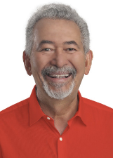
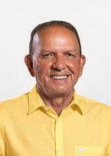

Alagoas
Quem ocupa os cargos hoje e quem assume em 2027.
Resultado provisórioTSE, capturado em 29/10/2026
Poder Executivo
Administra o governo e executa as leis: saúde, educação, segurança, estradas e o orçamento.
Governador
Paulo DantasMDB · 834.278 votos · eleito em 2022★ Novato›Quem comanda cada cidade do estado.
Poder Legislativo
Cria as leis, aprova o orçamento e fiscaliza o Executivo.
Senadores (2)
RenanMDB · 621.562 votos · eleito em 2018✓ Reeleito›Renan FilhoMDB · 845.988 votos · eleito em 2022★ Novato no Senado›Deputados federais (9)
Bancada federal por partido
9 cadeiras de Alagoas
- PP444%
- MDB222%
- PT111%
- PV111%
- UNIÃO111%
Do partido com mais cadeiras para o com menos, não por posição política. Cada partido usa a sua cor de marca.
Deputados federais (9): buscar e ver a lista

PaulãoPT · 65.814 votos · eleito em 2022✓ Reeleito›Rafael Brito (Tio Rafa)MDB · 58.134 votos★ Novato na Câmara›Deputados estaduais e distritais (27)
Assembleia por partido
27 cadeiras de Alagoas
- MDB1452%
- PP415%
- UNIÃO311%
- REPUBLICANOS27%
- AVANTE14%
- PL14%
- PT14%
- PV14%
Do partido com mais cadeiras para o com menos, não por posição política. Cada partido usa a sua cor de marca.
Deputados estaduais e distritais (27): buscar e ver a lista
Os eleitos de cada cidade do estado.
Poder Judiciário
Julga os conflitos e garante que as leis sigam a Constituição.
Os desembargadores do Tribunal de Justiça e do Tribunal Regional Eleitoral. Não são eleitos.
Poder Executivo
Administra o governo e executa as leis: saúde, educação, segurança, estradas e o orçamento.
Governador
JHCPSDB · 892.484 votos★ Novato›Quem comanda cada cidade do estado.
Poder Legislativo
Cria as leis, aprova o orçamento e fiscaliza o Executivo.
Senadores (3)
Arthur LiraPP · 948.703 votos★ Novato no Senado›Marina JHCPSDB · 926.860 votos★ Novato no Senado›Renan FilhoMDB · 845.988 votos · eleito em 2022★ Novato no Senado›Deputados federais (9)
Bancada federal por partido
9 cadeiras de Alagoas
- PP333%
- MDB222%
- PSD222%
- PSDB111%
- UNIÃO111%
Do partido com mais cadeiras para o com menos, não por posição política. Cada partido usa a sua cor de marca.
Deputados federais (9): buscar e ver a lista
Deputados estaduais e distritais (27)
Assembleia por partido
27 cadeiras de Alagoas
- MDB1556%
- PP311%
- PT311%
- PL27%
- PSDB27%
- UNIÃO27%
Do partido com mais cadeiras para o com menos, não por posição política. Cada partido usa a sua cor de marca.
Deputados estaduais e distritais (27): buscar e ver a lista

Cícero CavalcanteMDB · 53.323 votos★ Novato›Delegado LeonamUNIÃO · 42.172 votos✓ Reeleito›Dudu RonalsaMDB · 43.986 votos✓ Reeleito›Fernando PereiraPP · 59.428 votos✓ Reeleito›Fátima CanutoMDB · 45.294 votos✓ Reeleito›Gabi GonçalvesMDB · 52.777 votos✓ Reeleito›Guilherme LopesMDB · 38.629 votos★ Novato›Henrique ChicãoMDB · 39.402 votos★ Novato›Hugo WanderleyMDB · 47.724 votos★ Novato›Lelo MaiaMDB · 57.521 votos✓ Reeleito›Leonardo DiasPL · 17.178 votos★ Novato›Lucas BarbosaPSDB · 39.099 votos★ Novato›Marcelo VictorMDB · 69.370 votos✓ Reeleito›Marcos BarbosaPT · 29.873 votos✓ Reeleito›Marcos BeltrãoMDB · 40.732 votos★ Novato›Mesaque PadilhaPP · 35.521 votos✓ Reeleito›Paulinho MendonçaMDB · 65.166 votos★ Novato›Remi CalheirosMDB · 42.076 votos✓ Reeleito›Ricardo NezinhoMDB · 55.840 votos✓ Reeleito›Ronaldo MedeirosPT · 38.112 votos✓ Reeleito›Rose DavinoPP · 45.252 votos✓ Reeleito›Teca NelmaPT · 44.619 votos★ Novato›Tenorinho MaltaPSDB · 45.593 votos★ Novato›Os eleitos de cada cidade do estado.
Poder Judiciário
Julga os conflitos e garante que as leis sigam a Constituição.
Os desembargadores do Tribunal de Justiça e do Tribunal Regional Eleitoral. Não são eleitos.
Como ler
★ Novato Primeiro mandato nesta casa (Câmara ou Senado).
✓ Reeleito Já estava no cargo e foi eleito de novo.
↺ Retorno Já teve mandato, mas estava fora.
Sem selo Não conseguimos ligar a pessoa a um mandato anterior. Isso não quer dizer que seja novata: simplesmente não afirmamos nada.
Provisório Só é confirmado na diplomação.